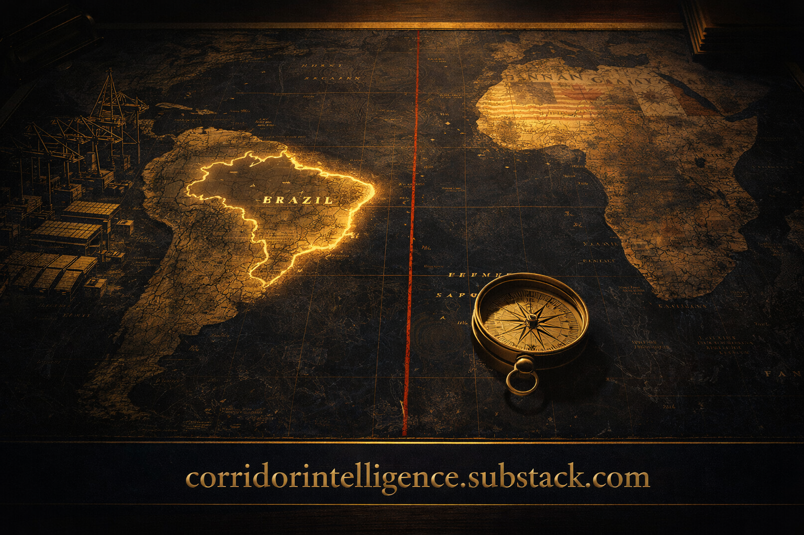
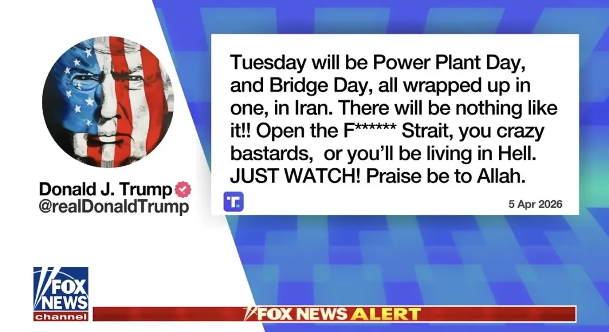
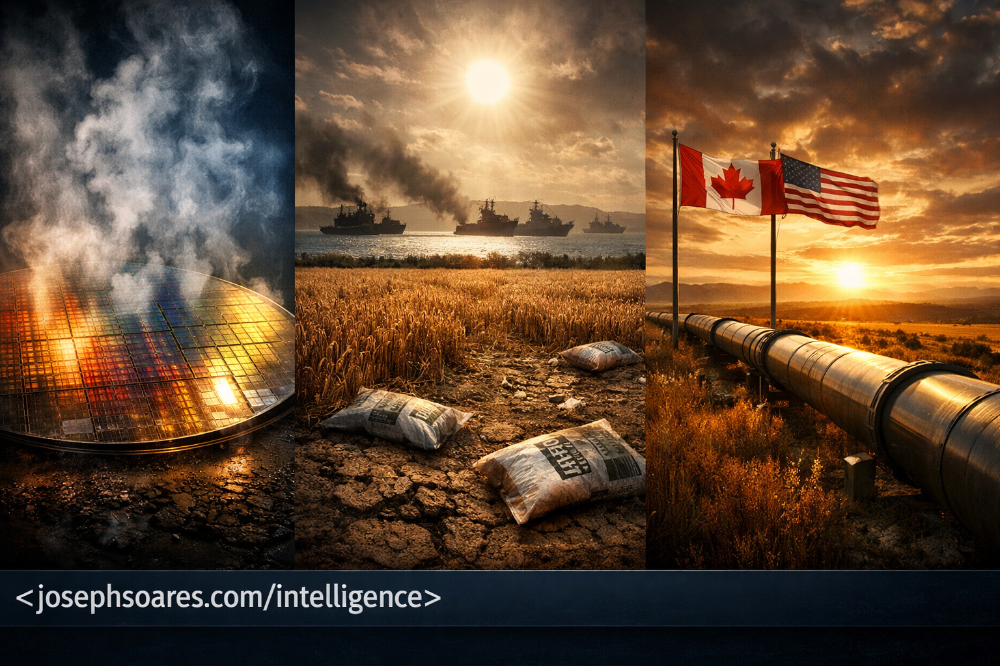

The Wire — What Matters Today
Top headlines from the sources that matter — selected for strategic relevance, not clicks. Coverage in English and French.


Washington · USA
Canada
Quebec
World · Geopolitics
Markets · Economy
Sources: Breitbart · Fox News · Fox Business · The Hill · Washington Times · Washington Examiner · White House · Congress.gov · Tax Foundation · Globe and Mail · Hill Times · CBC · Western Standard · La Presse · Le Devoir · Le Droit · CNBC · Yahoo Finance · Supply Chain Dive · Defence24 · European Commission · Ministère des Armées
Latest Commentary
Strategic analysis of political news that affects decision-makers
Subscribe to Corridor Intelligence
Free
Daily Brief headlines + daily commentary
Premium — $39/month
Full intelligence package
The Moon is now contested terrain. China plans a crewed lunar landing before 2030 and a permanent lunar base by 2035 — designed explicitly to harvest helium-3, an isotope rare on Earth but abundant on the lunar surface and critical to fusion reactors and quantum computing. Beijing has already built its own coalition — the International Lunar Research Station with Russia, Pakistan, Venezuela, and others — in direct opposition to the American framework. Meanwhile, India has emerged as the decisive third player. Chandrayaan-3’s successful south pole landing in 2023 — a feat neither the US nor China had achieved — established ISRO as a front-rank lunar power. By signing the Artemis Accords in June 2023 and planning Chandrayaan-4 for sample return, New Delhi has made its alignment in the new lunar geopolitics unambiguous. This is not science. This is resource geopolitics projected 250,000 miles into space.
Washington has responded with the Artemis Accords — 61 signatory nations, including Portugal as of January 2026 — establishing the rules of resource extraction, transparency, and space governance before anyone plants a permanent flag. That is the play: whoever writes the rules controls the game. The Artemis framework is essentially a lunar Bretton Woods — and countries that don’t join will negotiate on someone else’s terms.
Canada played this hand with remarkable precision. By contributing Canadarm3 to the Lunar Gateway station, Ottawa secured a seat at the table that far outweighs its economic footprint. Hansen — the first non-American to leave low-Earth orbit — is not a passenger. He is proof of concept that a well-positioned strategic partnership can buy access that would otherwise cost billions. India is running the same playbook at a larger scale: its NASA-ISRO partnership on the NISAR satellite, combined with demonstrated landing capability, positions New Delhi as the most valuable strategic partner in the Artemis coalition after the United States itself.
Consider what is actually at stake: water ice at the lunar south pole — rocket fuel and survival resource. Helium-3 scattered across the surface — the potential energy source of a fusion civilization. Rare earth elements embedded in the regolith — the same materials that semiconductors, electric vehicles, and defense systems depend on. Whoever establishes the supply chain controls the economy. This is the same pattern as oil in the 20th century and rare earths in the 21st — but projected onto a landscape where the rules have not yet been written.
Artemis II is not a commemorative flight. It is a warning shot. The message to Beijing, to New Delhi, to the markets, and to every nation that has not yet chosen a side is unambiguous: the race for lunar resources has begun, the alliances are crystallizing now, and those who hesitate will inherit the terms set by those who moved. For decision-makers, investors, and strategists, the time to understand the economic implications of space is not 2030. It is today.

Here is the reality Washington and Ottawa refuse to confront. Brazil produces 95% of the world’s niobium — essential for aerospace steel and superconductors. It holds the second-largest rare earth reserves on the planet and the second-largest graphite reserves, and it went from zero lithium exports to the fifth-largest lithium exporter in the world in just two years. Its agricultural sector grew 11.7% in 2025, with soy and corn production hitting record levels. It has 215 million people, a 100-million-strong labor force, and a GDP that reached $2.26 trillion. This is not an emerging market — it is a strategic supermarket. And while North America looks elsewhere, someone else is filling the cart.
In May 2025, President Lula traveled to Beijing and returned with $5.4 billion in new investment commitments across infrastructure, logistics, and sustainable development. China Merchants Group acquired a Brazilian oil port terminal for $448 million. Great Wall Motor committed $1 billion to Brazilian manufacturing plants. CGN Power is building a wind, solar, and energy storage hub. Brazil and China now settle bilateral trade in yuan and reais — bypassing the dollar entirely. Meanwhile, Washington responded with 50% tariffs that cratered Brazilian exports to the US by 20%, pushing Brazil faster into Beijing’s embrace. This is not strategy. This is voluntary surrender.
Canada is no better positioned despite a stronger starting hand. Canadian companies hold $19.8 billion in direct investment in Brazil. Bilateral merchandise trade stands at $12.7 billion. A defense cooperation agreement entered into force in February 2025. But Canada-Mercosur FTA negotiations have dragged for years, and Ottawa has no coherent Brazil strategy that matches the scale of the opportunity. Canada has exactly the assets Brazil wants — mining expertise, clean energy technology, critical minerals investment — and is sitting on its hands while China builds ports and power plants.
I say this as someone whose family crossed the Atlantic from the Azores, who speaks Portuguese, and who understands that the Lusophone world — Brazil, Portugal, Angola, Mozambique — represents 300 million speakers and trillions in untapped potential. Language and culture are not folksy curiosities. They are infrastructure of influence. Portugal understood this in 1494. China understands it today. The question is whether the United States and Canada will learn the lesson before the window closes — or whether they will repeat Spain’s mistake and wonder in twenty years why they ceded Latin America without a fight.
Israel’s response was predictably conditional. Prime Minister Netanyahu agreed to comply inside Iran — but flatly denied that any ceasefire applies in Lebanon, where Israeli operations continue. His conditions: Iran hands over all enriched uranium and commits to a complete halt of enrichment activities. In other words, Israel said yes to the pause and no to the premise. Pakistan’s prime minister insists the ceasefire covers Lebanon too. Netanyahu says it doesn’t. The ink wasn’t dry before the first disagreement.
And then there’s the UAE. Anwar Gargash, one of the Emirates’ most senior voices, went public: a ceasefire is not enough. What’s needed is a broader regional security architecture — weapons controls, maritime navigation guarantees for the Strait of Hormuz, and a permanent security mechanism. The UAE has intercepted 520 ballistic missiles, 2,221 drones, and 26 cruise missiles since this started. Thirteen dead. Two hundred and twenty-one injured. They’re not interested in a pause. They want a resolution.
But don’t hold your breath. A few hours after the announcement, rockets and drones were again falling on the Emirates and beyond. I guess the Iranians didn’t get the memo.
Two weeks. That’s what we’ve been given. The question isn’t whether the ceasefire will hold — it’s whether anyone on either side actually believes it will.

Here is what I believe will happen: nothing yet.
Not because Trump is bluffing. He isn’t. The strikes are real, the military is ready, and the President has demonstrated he is willing to act where others have only threatened. But Iran knows something Trump’s advisers know too — a week’s delay costs nothing, and buys everything.
What Trump actually needs: Trump’s demands are clear: an open Strait and a binding commitment that Iran will not go nuclear. Both are existential for the regime. The Strait is Iran’s last leverage card — the one tool that gives them asymmetric power over the global economy. And nuclear capability is the one guarantee they believe keeps regime change off the table. Asking Iran to surrender both simultaneously isn’t a negotiating position. It’s a demand for capitulation. Tehran will not deliver it.
Iran’s strategy — run the clock: The Iranian playbook right now is simple: survive. Not win — survive. The midterm elections are in November 2026. If Iran can keep the pressure on regional proxies, maintain its grip on the Strait, absorb the diplomatic heat, and avoid a military confrontation that unifies domestic opposition, they reach a potential turning point. A Democratic-leaning House or Senate changes the political calculus in Washington overnight. Iran has played this game before. They are patient in ways that democratic governments structurally cannot be.
The most likely scenario: The deadline will be extended — not because Trump blinks, but because there is no strategic upside to bombing Iran this week when the deal remains theoretically alive. You can always bomb next week. You cannot unbomb. But let’s be honest: the probability of military action before the end of 2026 is not low. If Iran runs the clock too aggressively, Trump will need to strike simply to preserve the credibility of every future threat he makes.
The Iranian people — who have endured decades of economic devastation, political repression, and the catastrophic mismanagement of their country’s extraordinary wealth and civilization — deserve better than to be caught in the crossfire of this standoff. For their sake, I hope both sides find the table again.

30% of global fertilizer trade passed through the Strait of Hormuz. It no longer does. Qatar’s urea plant — the world’s largest — is shut. India cut three plants. Bangladesh shuttered four of five. 45 million more people face acute hunger.
Canada and the US are the only allied nations that can fill both gaps. Saskatchewan holds the fifth-largest helium reserves on earth. The US produces 75% of its fertilizer domestically. Trans Mountain is operational.
What this means for decision-makers:
Nations that have always treated energy and strategic resources as a market problem must now treat them as a security problem. Qatar’s disruptions are not temporary — LNG facilities will take 3–5 years to rebuild. The window to act is now, not next budget cycle.
Saskatchewan should accelerate helium permitting immediately. The US should treat fertilizer production capacity as national security infrastructure. The USMCA framework already gives both countries the mechanism — all that’s missing is the political will.
This is not a temporary disruption. The nations that move first will set the terms of the next decade of industrial policy.
It worked. Both airmen are home. But the operation’s footprint raises a question that Iran’s foreign ministry is now asking publicly and that serious analysts should not dismiss: was the rescue the mission, or was it the cover?
Iran’s Foreign Ministry spokesman Esmail Baghaei pointed to a geographic problem. The downed pilot was located in Kohgiluyeh and Boyer-Ahmad Province — mountainous terrain in the southwest. The landing sites where U.S. forces staged were in central Iran, far closer to Isfahan, where the bulk of Iran’s 440 kilograms of 60%-enriched uranium sits buried under the rubble of facilities struck during Operations Midnight Hammer and Epic Fury.
The math doesn’t require conspiracy thinking. CNN reported in March that seizing Iran’s uranium would require a large ground force. Retired Admiral James Stavridis called it potentially the largest special forces operation in history — requiring over a thousand SOF operators and engineering units. The rescue operation deployed exactly that kind of force. MC-130Js are not medevac aircraft. They are special operations transports built for moving personnel, equipment, and cargo into denied territory. You don’t send four of them to pick up two men.
Deception is not an anomaly in war. It is doctrine. Every major military power builds secondary objectives into primary operations. The fog of a dramatic rescue — live updates, presidential announcements, wall-to-wall coverage — is precisely the environment in which a parallel extraction could proceed unnoticed. We may never get confirmation. We may not need it. The strategic outcome speaks for itself: if even a portion of that stockpile was secured, the calculus for every negotiation that follows just changed permanently.
What we do know: a 45-day ceasefire proposal is now on the table, brokered by Egypt, Pakistan, and Turkey. Iran has publicly rejected a temporary halt but has not walked away from talks. Trump extended his Strait of Hormuz deadline to Tuesday evening. The pieces are moving toward a deal — and a deal is far easier to close when your adversary’s most dangerous card has already been taken off the table.
Decision-makers should watch two things. First, whether the IAEA requests emergency access to Isfahan in the coming days — that will tell you whether something was moved. Second, whether the ceasefire terms include any provisions on nuclear material custody. If uranium appears in the framework, it was never just about two pilots.
The obvious question is the one no one in Washington wants to answer: how did they get in?
Not how did they evade detection. How did the system allow the blood relatives of the most dangerous Iranian military commander of his generation to obtain visas, clear background screening, enter the United States, and build comfortable lives in one of America’s most expensive cities — while the country their uncle commanded was actively killing Americans and destabilizing the Middle East?
This is not an immigration story. This is a counterintelligence story. Every relative of a senior IRGC commander living on American soil is a potential leverage point for Tehran — a channel for influence, intelligence collection, or coercion. The vetting apparatus that let this happen did not fail at the margins. It failed at the center.
The broader pattern is what should concern decision-makers. If Soleimani’s own family can slip through, the question is not who else is here. The question is who else was never even flagged.
This is vintage Trump. The language is deliberately misplaced, the timing surgically provocative, and the result predictable — wall-to-wall coverage, outrage from the base, and domination of the news cycle on a day most presidents spend at church. It works. It always works. The question isn’t whether it gets attention. The question is what it costs.
Presidential prestige is a finite strategic asset. Every commander-in-chief inherits it, spends it, and leaves it either stronger or weaker than they found it. Trump’s instinct — use provocation to control the narrative — has been his defining political weapon since 2015. But attention is not the same as authority, and dominating a news cycle is not the same as commanding respect on the world stage.
Some will argue this is unnecessary — that a wartime president with airmen in harm’s way over Iran doesn’t need to manufacture controversy on Easter morning. Others will say this is simply who he is, and to fixate on style is to miss the substance entirely. Both are right. The skill for decision-makers is knowing which lens matters in which moment — and not tripping over the stile when the field beyond it is what demands your attention.
The first airman was recovered quickly. This one evaded capture for over a day, wounded, climbing a 7,000-foot ridgeline in hostile territory before hiding in a mountain crevice and activating his emergency beacon. The extraction required hundreds of special operations forces, dozens of aircraft, and — according to senior administration officials — a CIA deception campaign inside Iran to misdirect search parties while the real recovery unfolded. That is not a routine pickup. That is a statement of capability.
What decision-makers should read from this: both crew members are now accounted for. The hostage-crisis scenario that would have paralyzed Washington’s freedom of action is off the table. The administration retains the initiative, and the domestic narrative stays on competence rather than loss. Iran, meanwhile, absorbs the humiliation of a successful extraction operation conducted on its own soil — the kind of operational fact that constrains a regime’s response options more than any diplomatic cable.
The colonel’s survival and recovery will dominate the next 48 hours of coverage. Watch what moves underneath it. When a news cycle is this loud, the quieter decisions are usually the consequential ones.
Here’s the uncomfortable truth: in coercive diplomacy, clarity matters more than courtesy. When Khrushchev banged his shoe at the UN, the world understood his message. When LBJ used language in private that would end careers today, foreign leaders got the point. Profanity, used deliberately, can signal resolve — that the speaker has moved past posturing and into operational intent.
But there’s a critical difference between controlled escalation and loss of composure. Effective coercive diplomacy requires two things: a credible threat and a credible off-ramp. Trump’s rhetoric delivers the first. The problem is the second. When you call your adversary “crazy bastards” on a public platform, you narrow their ability to comply without humiliation — and humiliated regimes don’t surrender, they escalate.
The real risk isn’t the profanity. It’s the rhetoric-reality gap. If Tuesday comes and the Strait is still closed and the strikes don’t come, every future threat loses weight. If the strikes do come, the profanity becomes a footnote to a wider war. Either way, the language itself isn’t the strategy — it’s a tell about whether one exists.
Decision-makers with exposure to energy markets, defence supply chains, or Middle East operations: the 48 hours after Monday’s deadline expiry are the ones to watch. Position accordingly.